Варіант 4. Виконав Чумак Кирил, група ІПЗ-11(3). Викладач Ковалюк Тетяна Володимирівна.
Мета роботи
- Вивчити особливості циклічних обчислювальних процесів з розгалуженнями.
- Опанувати технологію рекурентних обчислень.
- Навчитися розробляти алгоритми та програми розвинення функцій у ряди.
Умови задач
Завдання 1, варіант 4
Таблиця 4.2 методички має 24 варіанти, тому для номера 28 у списку групи маємо 28 - 24 = 4.
Обчислити значення функції y, розвинувши функцію arcsin(x) у ряд Тейлора. Визначити похибку.
Вимоги до всіх варіантів цього завдання:
- параметр функції змінюється від заданого з клавіатури мінімального значення до заданого максимального із певним кроком;
- точність вводиться з клавіатури як дробове число від 10-2 до 10-6;
- суму ряду рахує власна функція за рекурентним співвідношенням, функції для факторіала і степеня не використовуються;
- стандартне значення рахується бібліотечними математичними функціями, також визначається похибка;
- результат виводиться таблицею з колонками: значення аргумента x, значення функції y, стандартне значення функції, похибка;
- якщо для вибраного значення аргумента функція не визначена, друкується повідомлення "function is not defined".
Завдання 2, варіант 4
Таблиця 4.3 теж має 24 варіанти, тому 28 - 24 = 4.
Обчислити нескінченний ланцюговий дріб, задавши точність обчислення (10-5) з клавіатури. Ланцюговий дріб виражає число π.
Аналіз задач
Завдання 1, варіант 4
Ряд взято з таблиці 4.1:
У таблиці методички в четвертому доданку пропущено множник 7, а тут він є. Якщо поділити наступний член ряду на поточний, отримаємо рекурентне співвідношення:
Цикл у функції calculateArcsin працює, поки модуль члена ряду не менший за точність.
Похибка є модулем різниці між y і стандартним значенням, як у зразковій програмі.
Функція arcsin визначена лише для аргументу від -1 до 1. У першій гілці arcsin(2x) вимагає x ≥ -0.5, тому на проміжку від -2 до -0.5 функції немає. У другій гілці x + 5 лежить від 5 до 7, тому ця гілка не визначена ніде. Програма перевіряє модуль кожного аргументу і для таких x друкує "function is not defined". Отже, реальні значення y є лише при -0.5 ≤ x < 0.
Кількість кроків рахується наперед, а x рахується як мінімальне значення плюс i кроків. Якщо
додавати крок у циклі, останнє x може загубитись через похибку float.
Найбільше значення не може бути меншим за найменше, крок має бути додатним і давати не більше 1000 кроків, а точність лежить від 10-6 до 10-2. Якщо введено не число або значення поза цими межами, програма виводить повідомлення і просить ввести ще раз.
Таблиця 1 - Функції програми завдання 1
| Функція | Що робить |
|---|---|
printTitle | виводить назву роботи, автора й умову завдання |
inputRange | вводить межі аргументу і крок із перевіркою |
inputAccuracy | вводить точність із перевіркою |
calculateArcsin | рахує суму ряду для заданого аргументу |
calculateFunction | вибирає гілку, рахує y і стандартне значення |
printTable | перебирає x, рахує похибку і виводить таблицю |
main | викликає ці функції по черзі |
Завдання 2, варіант 4
Знаменники дробу є непарними числами, а чисельники дорівнюють квадратам номера рівня. Дріб глибини n рахується знизу вгору: спершу знаменник дорівнює 2n + 1, а потім для i від n до 1 виконується дія
Результат дорівнює 4 / знаменник. Глибина збільшується на 1, поки два сусідні значення не будуть відрізнятися менше ніж на точність. Після цього програма порівнює значення зі стандартним π, яке записано константою. Точність вводиться так само, як у першому завданні.
Таблиця 2 - Функції програми завдання 2
| Функція | Що робить |
|---|---|
printTitle | виводить назву роботи, автора й умову завдання |
inputAccuracy | вводить точність із перевіркою |
calculateFraction | рахує дріб заданої глибини |
calculatePi | збільшує глибину і виводить таблицю значень |
printResult | виводить результат, стандартне π і похибку |
main | викликає ці функції по черзі |
Джерела: Ковалюк Т.В. Алгоритмізація та програмування, 2024; Ковалюк Т.В., Петрівський В.Я. Гарний стиль програмування мовами C, C++, C#, 2025.
Блок-схеми алгоритмів
Завдання 1, варіант 4

printTitle (виведення назви роботи, автора й умови завдання)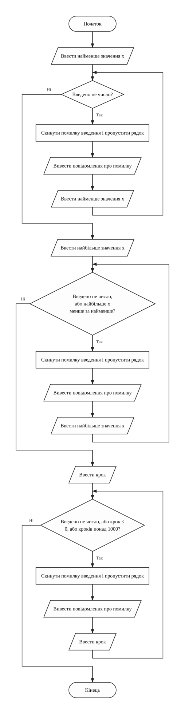
inputRange (введення меж аргументу і кроку з перевіркою)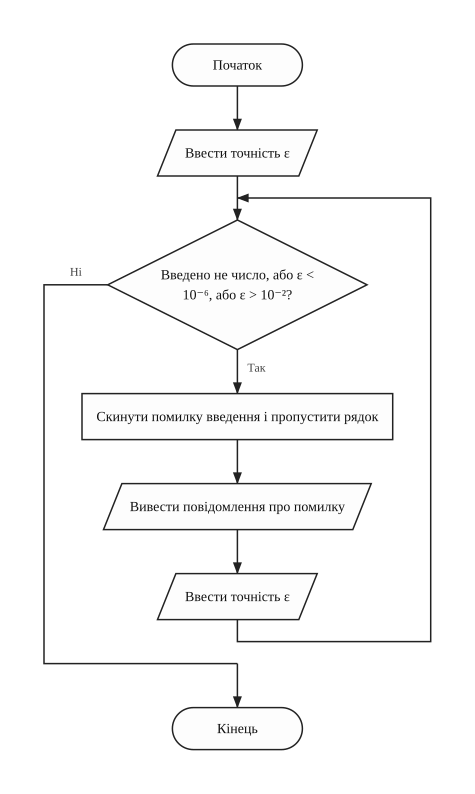
inputAccuracy (введення точності з перевіркою)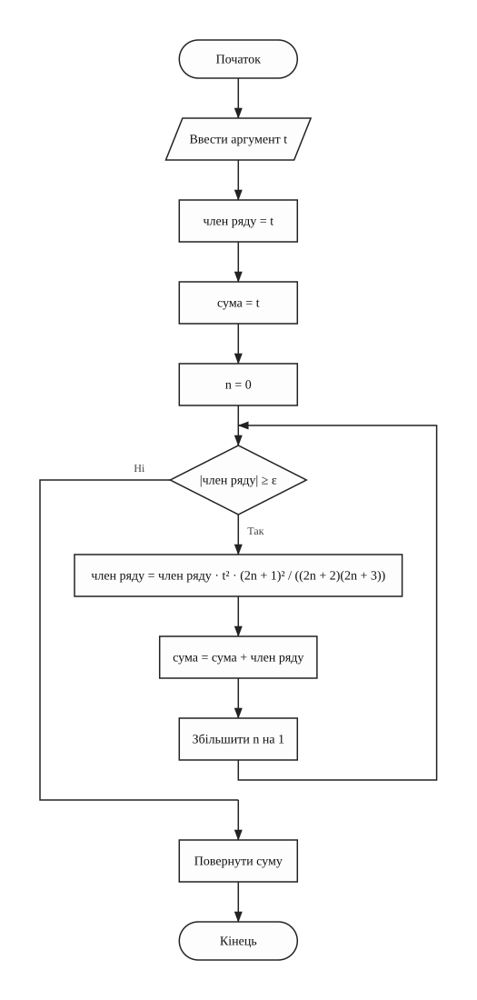
calculateArcsin (сума ряду для arcsin із заданою точністю)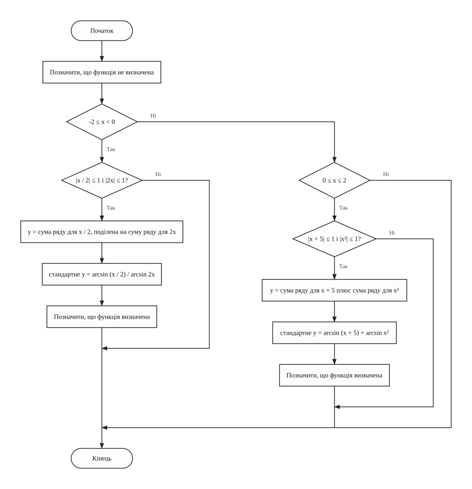
calculateFunction (обчислення y і стандартного значення для одного x)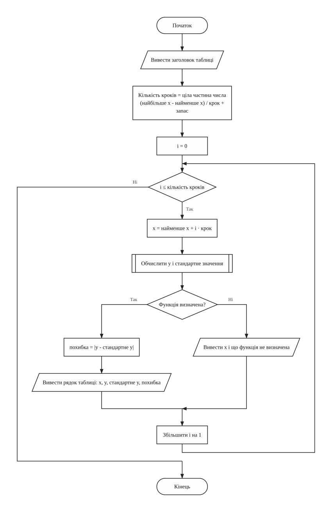
printTable (обчислення і виведення таблиці)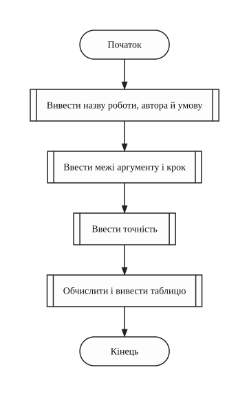
main (головна функція)Завдання 2, варіант 4
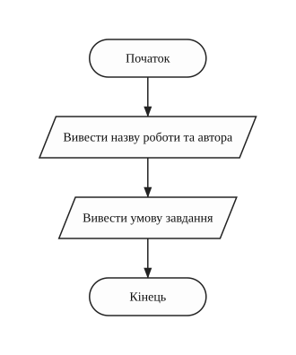
printTitle (виведення назви роботи, автора й умови завдання)
inputAccuracy (введення точності з перевіркою)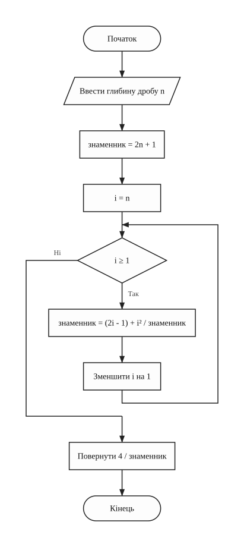
calculateFraction (обчислення дробу заданої глибини знизу вгору)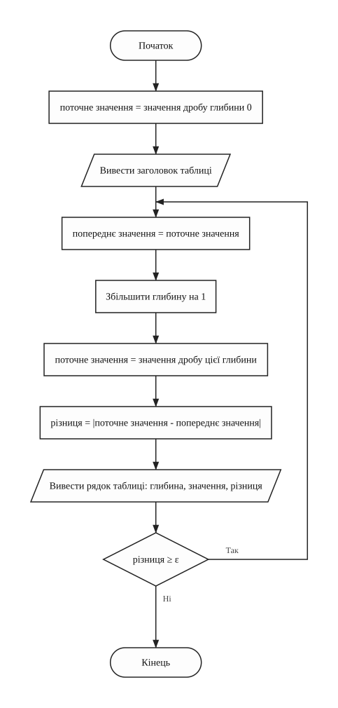
calculatePi (пошук потрібної глибини і виведення таблиці)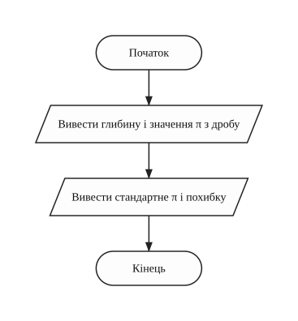
printResult (виведення підсумку)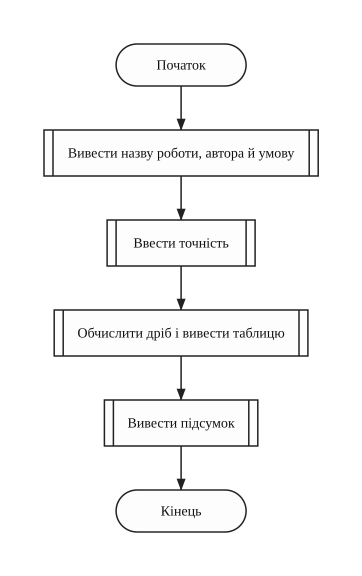
main (головна функція)Тексти програм
Завдання 1, варіант 4
Файл task1.cpp
/// <summary>
/// Лабораторна робота №4, завдання 1, варіант 4. Обчислити кусково задану
/// функцію через ряд для arcsin(x) і подати результати таблицею.
/// </summary>
/// <remarks>
/// Ім'я файлу: task1.cpp
/// Автор: Чумак Кирил, гр. ІПЗ-11(3)
/// Номер версії модуля: version 1
/// </remarks>
#include <cmath>
#include <iomanip>
#include <iostream>
using namespace std;
// Константи
const float MIN_ACCURACY = 0.000001f; // нижня межа точності
const float MAX_ACCURACY = 0.01f; // верхня межа точності
const int MAX_STEPS = 1000; // найбільша кількість кроків
const float STEP_RESERVE = 0.001f; // запас на похибку float
// Глобальні змінні
float minX = 0; // найменше значення аргументу
float maxX = 0; // найбільше значення аргументу
float step = 0; // крок зміни аргументу
float accuracy = 0; // задана точність
float x = 0; // поточне значення аргументу
float y = 0; // значення функції через ряд
float standardY = 0; // значення через бібліотечну функцію
float error = 0; // похибка
bool isDefined = false; // ознака того, що функція визначена в точці x
/// <summary>
/// Виводить назву роботи, автора, функцію y і ряд для arcsin
/// </summary>
void printTitle()
{
cout << "Lab work 4. Task 1. Variant 4." << endl;
cout << "Author: Kyryl Chumak, group IPZ-11(3)" << endl << endl;
cout << "Calculate y for x from min to max with a given step," << endl;
cout << "expanding arcsin into a Taylor series with the accuracy" << endl;
cout << "entered from the keyboard. Print x, y, the standard value" << endl;
cout << "and the error." << endl << endl;
cout << "y = arcsin(x / 2) / arcsin(2x), -2 <= x < 0" << endl;
cout << "y = arcsin(x + 5) + arcsin(x^2), 0 <= x <= 2" << endl;
cout << "arcsin(t) = t + t^3 / (2 * 3) + 1 * 3 * t^5 / (2 * 4 * 5) + ..."
<< endl
<< endl;
}
/// <summary>
/// Вводить межі аргументу і крок із перевіркою
/// </summary>
void inputRange()
{
cout << "Enter minimum x: ";
cin >> minX;
while (cin.fail())
{
cin.clear(); // скинути помилку введення
cin.ignore(1000, '\n'); // і пропустити неправильний рядок
cout << "Error! Enter minimum x as a number: ";
cin >> minX;
}
cout << "Enter maximum x (not less than minimum): ";
cin >> maxX;
while (cin.fail() || maxX < minX)
{
cin.clear();
cin.ignore(1000, '\n');
cout << "Error! Enter maximum x not less than minimum: ";
cin >> maxX;
}
cout << "Enter step (greater than 0, at most 1000 steps): ";
cin >> step;
while (cin.fail() || step <= 0 || (maxX - minX) / step > MAX_STEPS)
{
cin.clear();
cin.ignore(1000, '\n');
cout << "Error! Enter step greater than 0, at most 1000 steps: ";
cin >> step;
}
}
/// <summary>
/// Вводить точність. Поки введено не число або число поза межами, введення
/// повторюється
/// </summary>
void inputAccuracy()
{
cout << "Enter accuracy (from 0.000001 to 0.01): ";
cin >> accuracy;
while (cin.fail() || accuracy < MIN_ACCURACY || accuracy > MAX_ACCURACY)
{
cin.clear(); // скинути помилку введення
cin.ignore(1000, '\n'); // і пропустити неправильний рядок
cout << "Error! Enter accuracy from 0.000001 to 0.01: ";
cin >> accuracy;
}
}
/// <summary>
/// Рахує суму ряду для arcsin. Наступний член ряду отримується з поточного,
/// цикл працює, поки член ряду не менший за точність
/// </summary>
/// <param name="argument">аргумент від -1 до 1</param>
/// <returns>сума ряду</returns>
float calculateArcsin(float argument)
{
float member = argument; // поточний член ряду
float sum = argument; // сума ряду
int n = 0; // номер члена ряду
while (fabs(member) >= accuracy)
{
member = member * argument * argument * (2 * n + 1) * (2 * n + 1)
/ ((2 * n + 2) * (2 * n + 3));
sum = sum + member;
n++;
}
return sum;
}
/// <summary>
/// Обчислює y і стандартне значення для поточного x. Якщо x поза межами або
/// аргумент arcsin за модулем більший за 1, функція не визначена
/// </summary>
void calculateFunction()
{
isDefined = false;
if (x >= -2 && x < 0)
{
if (fabs(x / 2) <= 1 && fabs(2 * x) <= 1)
{
y = calculateArcsin(x / 2) / calculateArcsin(2 * x);
standardY = asin(x / 2) / asin(2 * x);
isDefined = true;
}
}
else if (x >= 0 && x <= 2)
{
if (fabs(x + 5) <= 1 && fabs(x * x) <= 1)
{
y = calculateArcsin(x + 5) + calculateArcsin(x * x);
standardY = asin(x + 5) + asin(x * x);
isDefined = true;
}
}
}
/// <summary>
/// Виводить таблицю. Кількість кроків рахується наперед, щоб останнє значення x
/// не втратилось через похибку float
/// </summary>
void printTable()
{
int stepCount = 0; // кількість кроків
int i = 0; // номер кроку
cout << endl
<< setw(9) << "x" << setw(13) << "y" << setw(13) << "standard"
<< setw(13) << "error" << endl;
stepCount = (int)((maxX - minX) / step + STEP_RESERVE);
for (i = 0; i <= stepCount; i++)
{
x = minX + i * step;
calculateFunction();
cout << fixed << setprecision(4) << setw(9) << x;
if (isDefined)
{
error = fabs(y - standardY);
cout << setprecision(6) << setw(13) << y << setw(13) << standardY
<< scientific << setprecision(3) << setw(13) << error << endl;
}
else
{
cout << " function is not defined" << endl;
}
}
}
/// <summary>
/// Головна функція програми
/// </summary>
/// <returns>0 після завершення роботи</returns>
int main()
{
printTitle();
inputRange();
inputAccuracy();
printTable();
return 0;
}
Завдання 2, варіант 4
Файл task2.cpp
/// <summary>
/// Лабораторна робота №4, завдання 2, варіант 4. Обчислити нескінченний
/// ланцюговий дріб для числа pi із заданою точністю.
/// </summary>
/// <remarks>
/// Ім'я файлу: task2.cpp
/// Автор: Чумак Кирил, гр. ІПЗ-11(3)
/// Номер версії модуля: version 1
/// </remarks>
#include <cmath>
#include <iomanip>
#include <iostream>
using namespace std;
// Константи
const float MIN_ACCURACY = 0.000001f; // нижня межа точності
const float MAX_ACCURACY = 0.01f; // верхня межа точності
const float PI = 3.1415927f; // стандартне значення pi
// Глобальні змінні
float accuracy = 0; // задана точність
float currentValue = 0; // значення дробу при поточній глибині
float previousValue = 0; // значення дробу при попередній глибині
float difference = 0; // різниця двох сусідніх значень
int depth = 0; // поточна глибина дробу
/// <summary>
/// Виводить назву роботи, автора і ланцюговий дріб
/// </summary>
void printTitle()
{
cout << "Lab work 4. Task 2. Variant 4." << endl;
cout << "Author: Kyryl Chumak, group IPZ-11(3)" << endl << endl;
cout << "Calculate the infinite continued fraction for pi with the" << endl;
cout << "accuracy entered from the keyboard." << endl << endl;
cout << "pi = 4 / (1 + 1^2 / (3 + 2^2 / (5 + 3^2 / (7 + 4^2 / (9 + ...)))))"
<< endl
<< endl;
}
/// <summary>
/// Вводить точність. Поки введено не число або число поза межами, введення
/// повторюється
/// </summary>
void inputAccuracy()
{
cout << "Enter accuracy (from 0.000001 to 0.01): ";
cin >> accuracy;
while (cin.fail() || accuracy < MIN_ACCURACY || accuracy > MAX_ACCURACY)
{
cin.clear(); // скинути помилку введення
cin.ignore(1000, '\n'); // і пропустити неправильний рядок
cout << "Error! Enter accuracy from 0.000001 to 0.01: ";
cin >> accuracy;
}
}
/// <summary>
/// Рахує дріб заданої глибини знизу вгору, від останнього знаменника до першого
/// </summary>
/// <param name="fractionDepth">кількість вкладених дробів</param>
/// <returns>наближене значення pi</returns>
float calculateFraction(int fractionDepth)
{
float denominator = 2 * fractionDepth + 1; // поточний знаменник
int i = 0; // номер рівня дробу
for (i = fractionDepth; i >= 1; i--)
{
denominator = (2 * i - 1) + i * i / denominator;
}
return 4 / denominator;
}
/// <summary>
/// Збільшує глибину дробу, поки два сусідні значення не відрізнятимуться менше
/// ніж на точність, і виводить таблицю
/// </summary>
void calculatePi()
{
currentValue = calculateFraction(depth);
cout << endl << fixed << setprecision(7);
cout << setw(6) << "depth" << setw(14) << "value" << setw(14)
<< "difference" << endl;
do
{
previousValue = currentValue;
depth++;
currentValue = calculateFraction(depth);
difference = fabs(currentValue - previousValue);
cout << setw(6) << depth << setw(14) << currentValue << setw(14)
<< difference << endl;
} while (difference >= accuracy);
}
/// <summary>
/// Виводить підсумок і порівнює його зі стандартним pi
/// </summary>
void printResult()
{
cout << endl << "Fraction depth = " << depth << endl;
cout << "pi from the fraction = " << currentValue << endl;
cout << "standard pi = " << PI << endl;
cout << "error = " << fabs(currentValue - PI) << endl;
}
/// <summary>
/// Головна функція програми
/// </summary>
/// <returns>0 після завершення роботи</returns>
int main()
{
printTitle();
inputAccuracy();
calculatePi();
printResult();
return 0;
}
Результати виконання
Завдання 1, варіант 4
На проміжку від -2 до 2 з кроком 0.25 значення є лише для x = -0.5 і x = -0.25, решта рядків містить повідомлення. Тому далі той самий розрахунок показано докладніше, від -0.5 до -0.05.
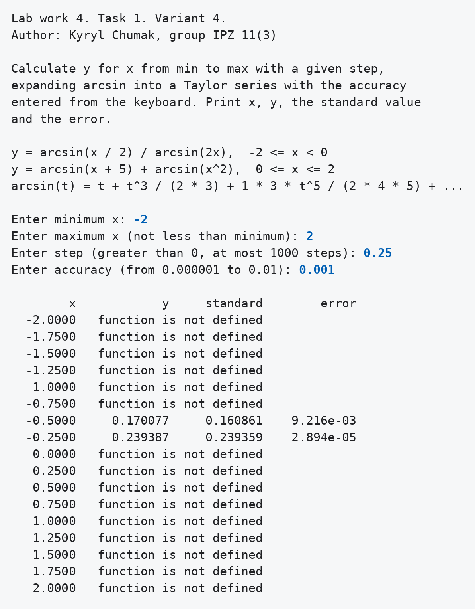
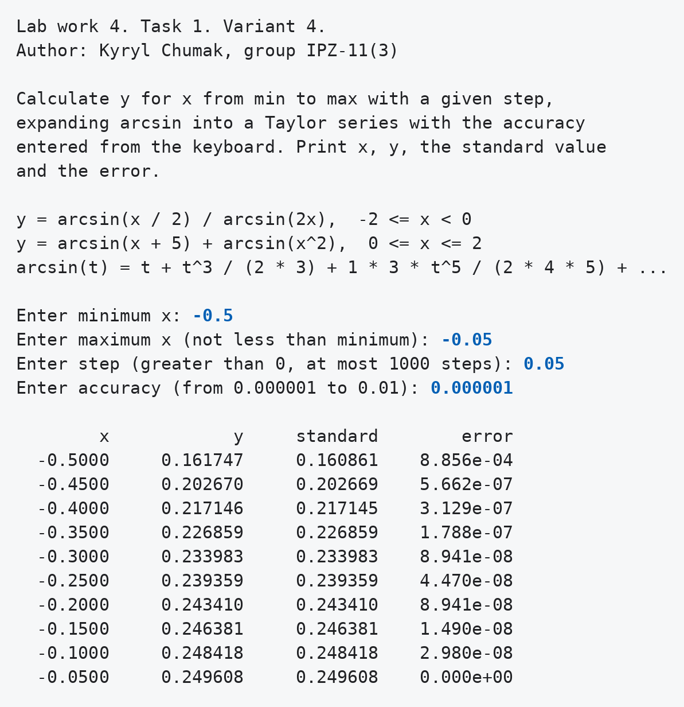
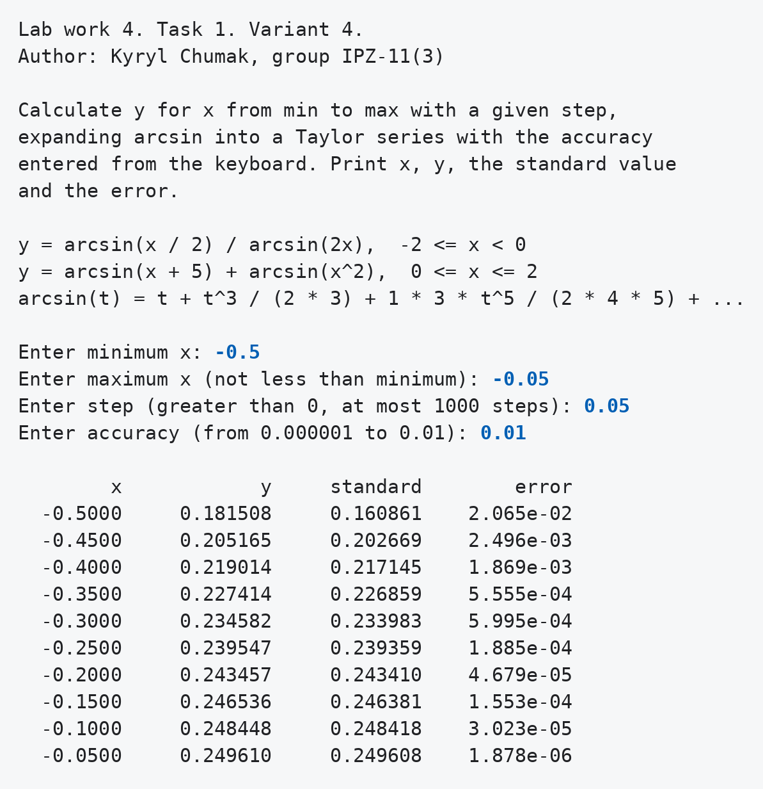
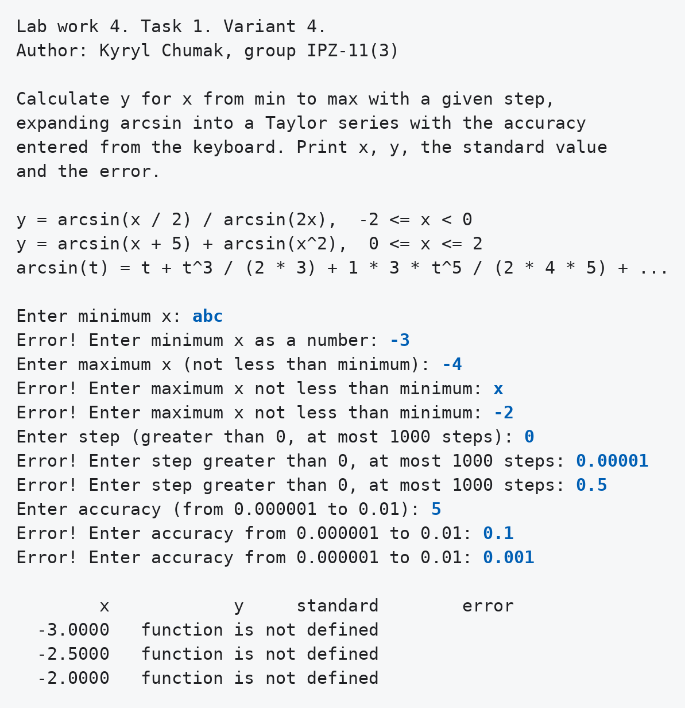
Завдання 2, варіант 4
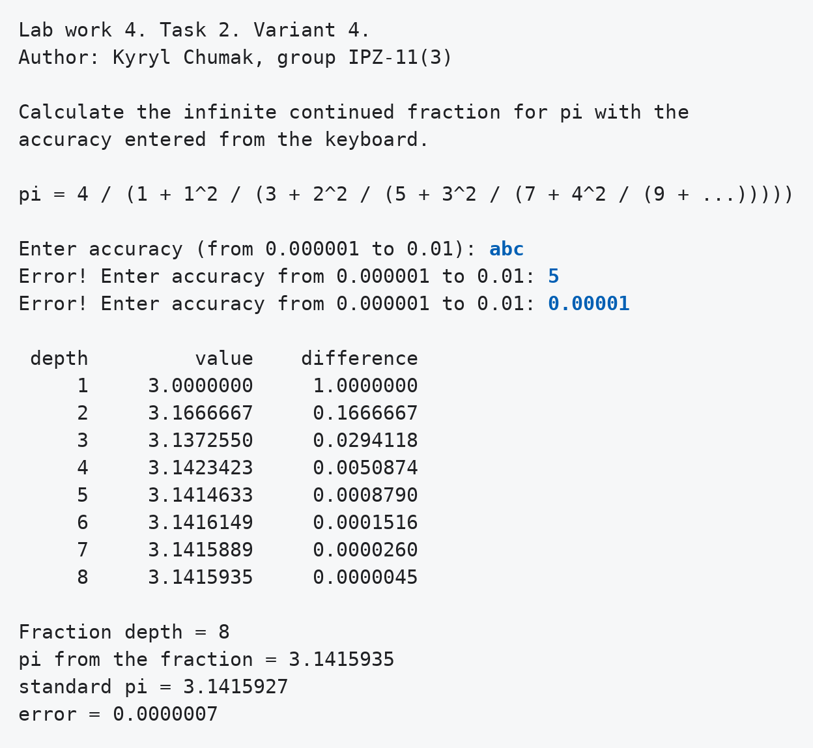
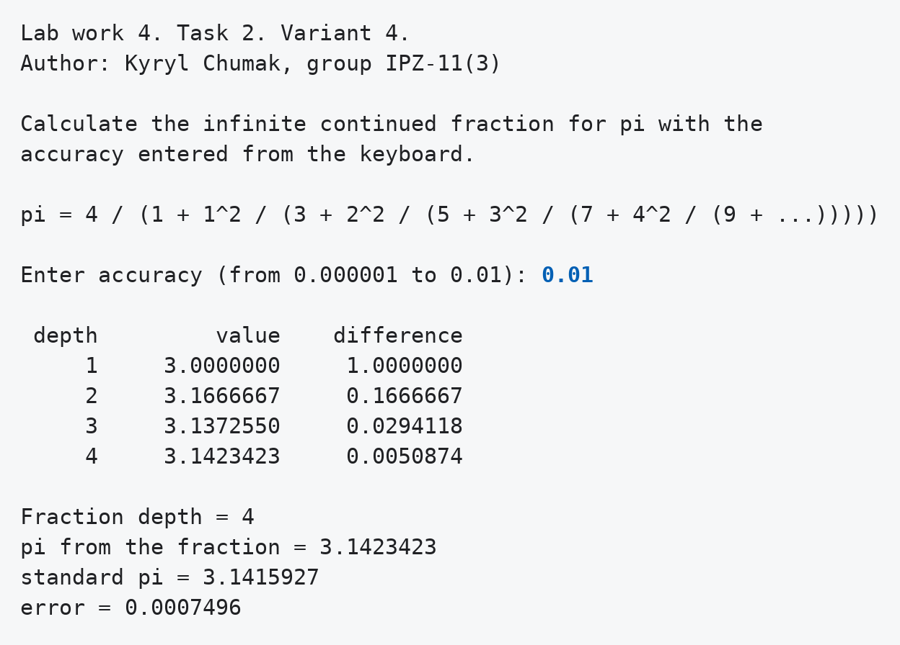
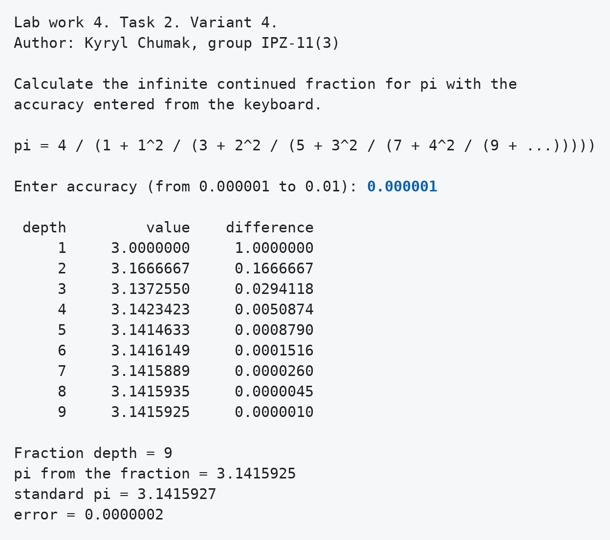
Аналіз достовірності результатів
Перевірка в Excel
Файл check.xlsx має три таблиці. У першій Excel рахує стандартне
значення функцією ASIN і порівнює його з колонкою програми. У другій для x = -0.25 і
точності 0.001 члени ряду пораховано за загальною формулою через FACT і
POWER, без рекурентного співвідношення. У третій ланцюговий дріб пораховано зверху вниз
через чисельники й знаменники проміжних дробів, а програма рахує його знизу вгору.
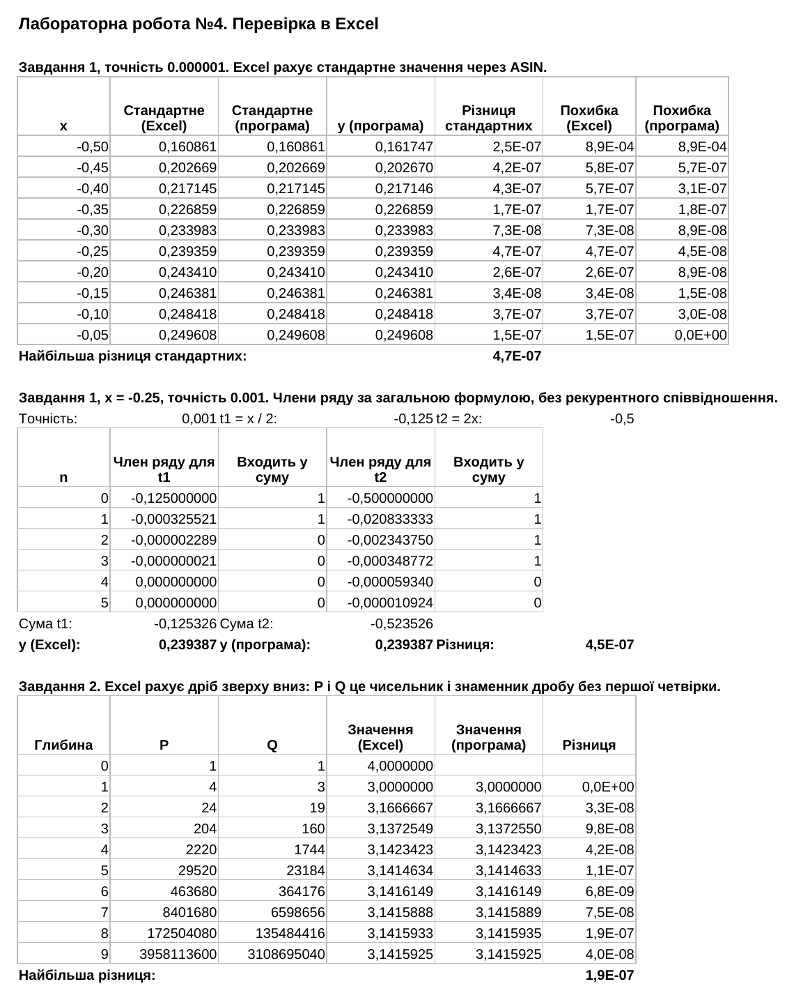
Найбільша різниця стандартних значень дорівнює 4.7 · 10-7, бо програма друкує шість
знаків після коми. Для x = -0.25 Excel отримав y = 0.239387, як і програма. Для ланцюгового дробу
найбільша різниця 1.9 · 10-7, вона пояснюється точністю типу float.
Похибка і точність
Значення взято з рисунків розділу результатів.
Таблиця 3 - Похибка при різній точності
| Точність | Похибка при x = -0.5 | Похибка при x = -0.25 |
|---|---|---|
| 0.01 | 2.065e-02 | 1.885e-04 |
| 0.001 | 9.216e-03 | 2.894e-05 |
| 0.000001 | 8.856e-04 | 4.470e-08 |
При x = -0.5 рахується arcsin(-1), і ряд збігається дуже повільно. Тому там похибка набагато більша, ніж в інших точках, і більша за задану точність. У решті рядків таблиці з точністю 0.000001 похибка не перевищує 5.662e-07.
Ручна перевірка
Таблиця 4 - Значення, пораховані вручну
| Що рахується | Розрахунок | Очікується | Програма |
|---|---|---|---|
| дріб глибини 1 | 4 / (1 + 1 / 3) | 3 | 3.0000000 |
| дріб глибини 2 | 4 / (1 + 1 / (3 + 4 / 5)) | 3.1666667 | 3.1666667 |
| x = 1 | x + 5 = 6, що більше за 1 | не визначена | function is not defined |
| x = -1 | |2x| = 2, що більше за 1 | не визначена | function is not defined |
При точності 0.00001 програма зупинилась на глибині 8 зі значенням 3.1415935. Це відрізняється від стандартного π на 0.0000007.
Висновки
Головний результат першого завдання вийшов не таким, як у постановці: функція має значення лише при -0.5 ≤ x < 0, а друга гілка не визначена в жодній точці. Програма перевіряє аргументи arcsin і пише про це в таблиці. Рекурентну формулу довелося виводити самому, бо в таблиці методички є лише ряд, до того ж із пропущеним множником. На межі x = -0.5 похибка лишається великою навіть при найменшій точності, а в інших точках вона зменшується разом із точністю.
Ланцюговий дріб збігається швидко. Для точності 0.00001 вистачило глибини 8. Значення обох програм збіглися з Excel, де вони пораховані іншими формулами.